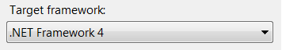

Deploying things to Dynamics Crm?
- Frustrated of manually applying Solution Files or registering workflows?
- Has a plugin been registered on Production but not in UAT?
- Do you value your time?
CrmUp will help you to reach that nirvana known as "Continuous Delivery Land". CrmUp will apply all necessary changes (from your release) for you, essentially rolling up the target Dynamics Crm from its previous version to the version in your release. CrmUp will apply the things that you give it:-
- Dynamics Crm Solution files.
- Code based activities / migrations.
"Dynamics Crm Solution" files should be familiar to anyone who works with customising Dynamics Crm, and they effectively contain customisations to apply.
Code based migrations are methods that can be written by you (the developer) in order to perform an activity that would otherwise have to be achieved manually. There are many such activities of this nature that can be automated through code. Many are mentioned in the white paper such as importing some intial reference / configurational data into Dynamics for example, or un-registering a plugin etc.
This library has roots..
At the heart of CrmUp lies DbUp, and CrmUp is an extension for DbUp that brings DbUp's philosophy to the realm of Microsoft Dynamics Crm.
Getting Started
Start by creating a simple C# console project in Visual Studio, and adding your Crm Solution files to it. From the properties window, mark them as Embedded Resources:

Under your project properties, make sure to set the Target Framework to either .NET 4.0 or .NET 4.5:
Next, use NuGet to install the CrmUp package:
Install-Package CrmUpFinally, in Program.cs, add the following code:
static int Main(string[] args)
{
var connectionString = args.FirstOrDefault()
?? "Url=http://crmurl:5555/orgname;Domain=domain; UserName=admin; Password=pasword;Timeout=00:15:00;";
var upgrader =
DeployChanges.To
.DynamicsCrmOrganisation(connectionString)
.WithSolutionsEmbeddedInAssembly(Assembly.GetExecutingAssembly())
.LogToConsole()
.Build();
var result = upgrader.PerformUpgrade();
if (!result.Successful)
{
Console.ForegroundColor = ConsoleColor.Red;
Console.WriteLine(result.Error);
Console.ResetColor();
return -1;
}
Console.ForegroundColor = ConsoleColor.Green;
Console.WriteLine("Success!");
Console.ResetColor();
return 0;
}
}
You now have a console application that will apply your Crm Solution files to a Dynamics Crm system in order to roll it up to the latest version! After running it, you'll see something like this:

The next time you run it, you'll see:

Why a console application?
For many reasons, all of which are mentioned over on DbUp's documentation , but I will list them again here (copied from their site):
By putting your migration scripts in an executable that can be run, you'll get a lot of benefits:
- You can hit F5 at any time to test the migration scripts
- Other developers on your team can do the same
- You can execute them as part of an automated deployment
- You can run it during your integration tests
- Since it's in your VS solution, it will go into source control along with the rest of your code
- Alternatively, instead of a console application, you can create a class library that references DbUp, and embed it into a maintenance screen inside your application.
Journaling
CrmUp creates a new entity in Crm, called "CrmUp Journal", and this is used to track the change scripts that have been applied to the system. Before running, CrmUp checks the Journal records to work out which change scripts can be skipped. After applying a change script, an appropriate journal record is created to record the change that has been applied. If you ever want to know what Migrations have been applied to Dynamics CRM, you can query this entity.

Organisation Creation?
CrmUp can even automatically create the Dynamics Crm organisation for you if it doesn't allready exist:-
sample code to come..
Code based Migrations?
You can write code based migrations to perform code based deployment activities that you need. This is similar in concept to EF "Code-First" Migrations. Your migrations are executed by CrmUp in alphabetical order by their "ScriptName". If the migration has already been successfully run against the CRM in the environment then it will not be run a second time. Only the migrations that need to be run will be executed by CrmUp. You can create a code based migration by simply inheriting from a particular abstract class like so:
public class ImportCurrencies : CrmCodeMigration
{
public override string ScriptName
{
get { return "0001" + this.GetType().Name; }
}
public override void Up(ICrmServiceProvider serviceProvider, IUpgradeLog log)
{
var service = serviceProvider.GetOrganisationService();
// Do any thing you like as part of this code based migration here..
// As long as you don't throw an exception, the migration will be record in the crm // journal table as successfully run.
}
}
Resources
The source code for CrmUp is all on GitHub. Any issues can also be raised there.